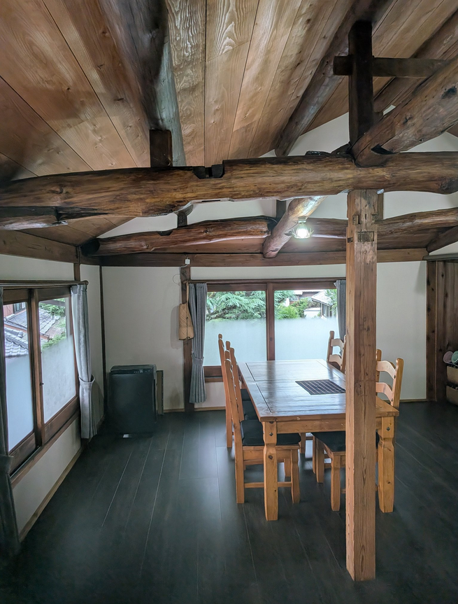
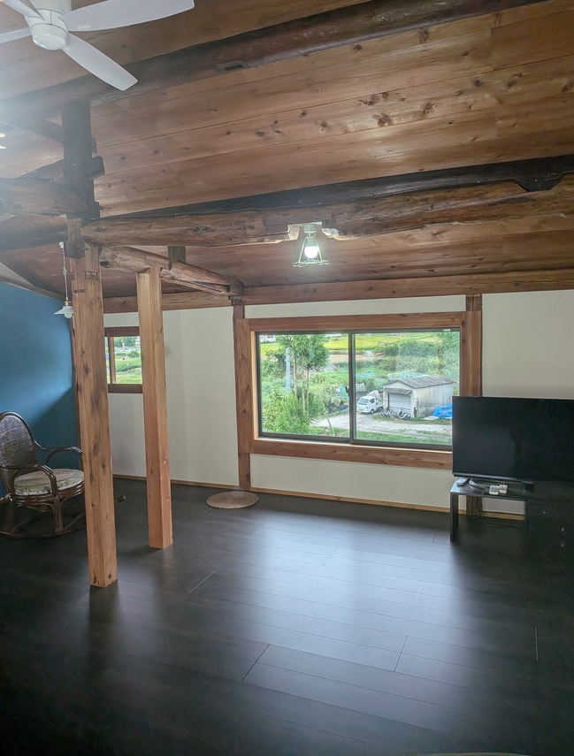

風和里とは About Huwari
風和里（ふわり）は、京都府相楽郡和束町に佇む築80年を超える古民家です。 Huwari (Fuwari) is a traditional farmhouse over 80 years old, nestled in Wazuka, Kyoto.
茶の郷として知られる和束町の自然の中、約1年をかけて丁寧に手入れを行い、2018年7月に農家民宿として新たな命を吹き込まれました。 Surrounded by the tea fields of Wazuka, it was carefully restored over a year and reopened as a guesthouse in July 2018.
現在は民泊営業を停止しており、地域の文化や人をつなぐ場として新たな利活用の方法を検討しています。 Currently, lodging services are suspended while we explore new ways to connect people and local culture.
二階のリノベーション Renovated Second Floor
昔の低い天井を取り除き、太い梁を露わにすることで、かつて4室に分かれていた二階を一つの開放的な大広間に生まれ変わらせました。古民家ならではの木の温もりと、広々とした空間が共存しています。 We removed the old low ceilings to expose the thick beams, transforming four small rooms into one spacious open hall. The warmth of aged wood and airy openness now define the space.


アクセス Access
- Address
- 京都府相楽郡和束町南大林11
11 Minamiobayashi, Wazuka-cho, Soraku-gun, Kyoto 619-1213, Japan - Train
- JR加茂駅よりバスで約25分 / 25 min by bus from JR Kamo Station
- Car
- 京奈和自動車道 木津ICより約20分 / 20 min from Kizu IC, Keinawa Expressway
- Parking
- あり（無料） / Available (free)
よくある質問 FAQ
現在宿泊はできますか？
申し訳ありませんが、現在民泊営業は停止しております。
We are currently not accepting overnight guests.
見学や撮影は可能ですか？
事前にご相談いただければ、内容によって対応可能です。お問い合わせください。
Visits and photo shoots may be possible upon request. Please contact us.
周辺におすすめの観光スポットは？
和束町の茶畑景観（京都府景観資産）や、石寺の茶畑展望台がおすすめです。
The Wazuka tea plantations (a Kyoto Prefecture scenic asset) and the Ishidera Observatory are highly recommended.
お問い合わせ Contact
ご質問や利活用のご提案はお気軽にどうぞ。
Please feel free to reach out with questions or ideas.
- Instagram @fuwari_kyoto DM open
- X (Twitter) @huwari2018_ DM open
- メールでのお問い合わせ Email